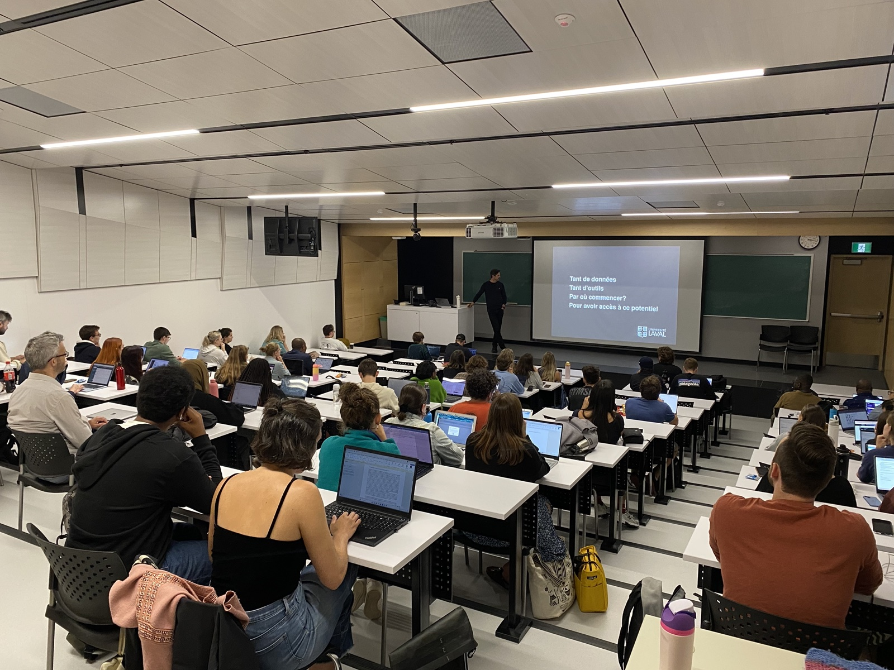
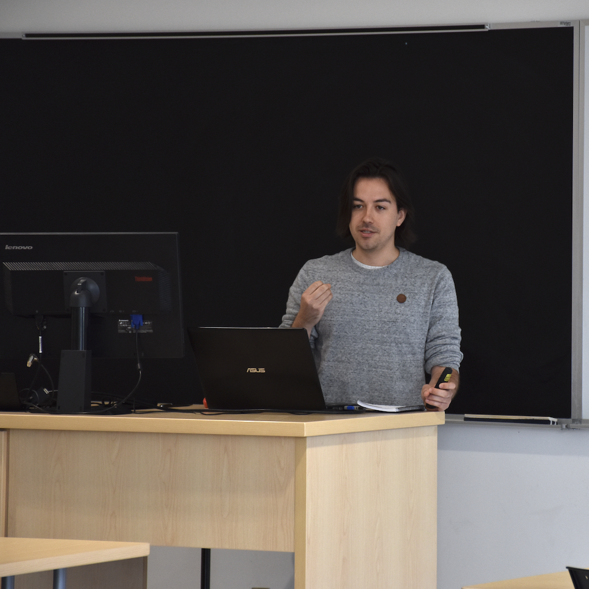
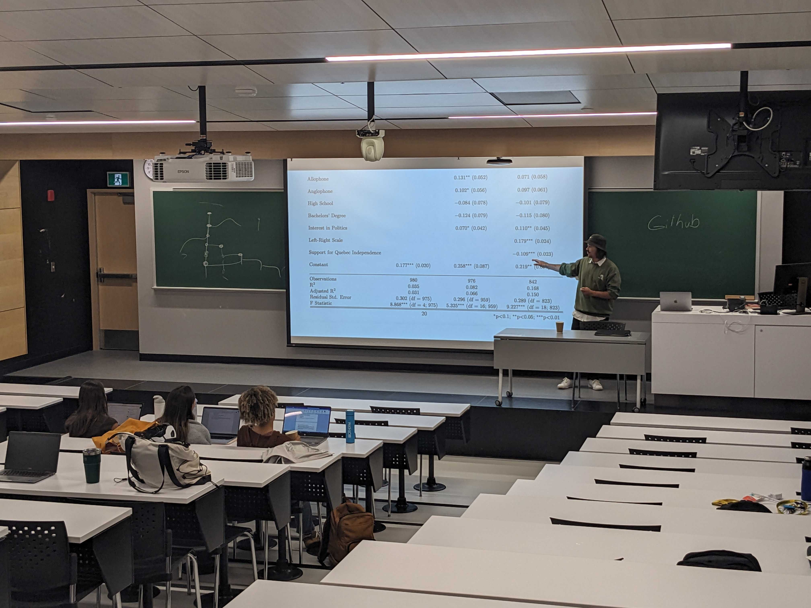
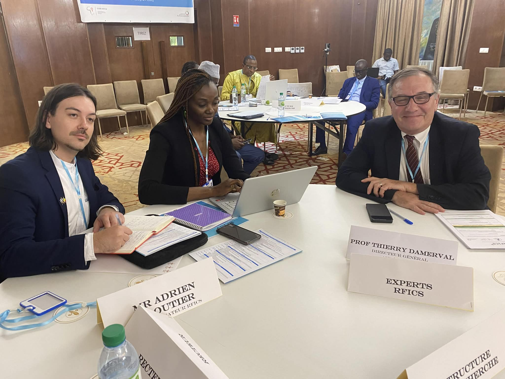
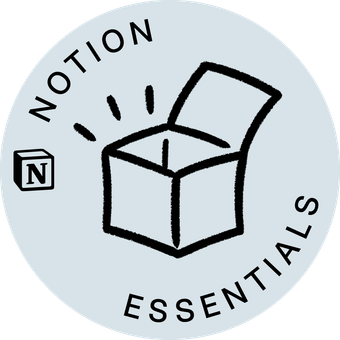

Adrien Cloutier
Doctorant en science politique, Université Laval | Soutenance 2026
Saillance médiatique • Communication politique • Agilité • Méthodes computationnelles • Outils numériques
Je développe Radar+, une infrastructure computationnelle qui mesure la saillance des objets publics dans les médias québécois, canadiens et américains. Ma thèse analyse l'agenda médiatique à l'ère numérique. En 2027, je poursuivrai au postdoctorat à UCLA pour étudier la polarisation médiatique aux États-Unis.
À propos

Formé initialement en journalisme, Adrien Cloutier est doctorant en science politique à l'Université Laval (défense prévue automne 2026), où il consacre ses recherches à la communication politique, à l'agenda médiatique, à la saillance médiatique, à la polarisation et aux méthodes computationnelles. Financé par le Fonds de recherche Société et culture (FRQSC), il développe Radar+, une infrastructure computationnelle qui collecte automatiquement les pages d'accueil de ~20 médias québécois, canadiens et américains toutes les 10 minutes depuis 2019.
Il est co-créateur de l'École interdisciplinaire outils & méthodes (EIOM), une école d'été annuelle réunissant étudiants, chercheurs et professionnels autour des meilleures pratiques en recherche. Ancien coordonnateur scientifique du Réseau francophone international en conseil scientifique (RFICS) (2022-2024), il a piloté des activités de recherche internationale, organisé un atelier à Dakar (juillet 2024) et structuré des partenariats reliant le monde académique et les décideurs publics en Amériques, Afrique et Europe.
Adrien est co-coordonnateur de la Chaire de leadership en enseignement des sciences sociales numériques (CLESSN) depuis 2022 et du Centre d'analyse des politiques publiques (CAPP) depuis 2023. Il est également membre de l'Observatoire international sur les impacts sociétaux de l'IA et du numérique (OBVIA), du Groupe de recherche en communication politique (GRCP) et du Centre pour l'étude de la citoyenneté démocratique (CÉCD).
Passionné par la pédagogie, il est chargé de cours à l'Université Laval depuis 2023, où il a créé et enseigne le cours «Outils numériques en sciences sociales» (POL-6078) et la méthodologie quantitative aux cycles supérieurs et au baccalauréat. Son expertise se situe au croisement de la recherche, de l'enseignement et du développement d'infrastructures computationnelles pour les sciences sociales.
En 2027, il entamera un projet postdoctoral à UCLA sous la supervision du professeur Stuart Soroka, intitulé "Fox vs CNN: A Longitudinal Analysis of Media Salience and Polarization in the United States". Ce projet analysera l'évolution de la polarisation médiatique américaine entre 2019 et 2027 à partir des données Radar+, développera un indice de divergence/concordance médiatique et produira des visualisations publiques et articles scientifiques.
Radar+
Parlez-en en bien, parlez-en en mal.
Radar+ est une infrastructure computationnelle développée entièrement en R pour mesurer la saillance des objets publics dans les médias québécois, canadiens et américains. Le système collecte automatiquement les pages d'accueil de ~20 médias toutes les 10 minutes depuis 2019 et utilise un modèle de langage local (LLM) pour identifier et classifier les objets médiatiques.
EIOM
École interdisciplinaire outils & méthodes de l'Université Laval

École d'été annuelle - Université Laval
L'EIOM est une école d'été interdisciplinaire que j'ai co-créée et que je co-organise depuis 2019. Elle réunit chaque année des étudiants, chercheurs et professionnels autour des meilleures pratiques en recherche et des outils numériques contemporains.
Publications
Mes travaux de recherche portent sur la communication politique, l'agenda médiatique, la polarisation et les méthodes computationnelles.
Mémoire de maîtrise
Titre: Highs et Downs de l'opinion publique : Une analyse par les médias de la légalisation du cannabis au Canada
Année: 2020 | Institution: Université Laval
Publications en libre accès
Quebec National Symbolism and Its Effects on Political Attitudes (2025)
Use of research evidence in legislatures: a systematic review (2024)
Pour une liste exhaustive et mise à jour de mes publications, citations et indices bibliométriques, consultez mon profil Google Scholar.
Enseignement
Chargé de cours à l'Université Laval depuis 2023, j'enseigne les outils numériques et la méthodologie quantitative aux cycles supérieurs, ainsi qu'au baccalauréat.

Outils numériques en sciences sociales
Introduction aux outils numériques et méthodes computationnelles pour la recherche en sciences sociales. Le cours couvre R, la visualisation de données, Git, la reproductibilité et l'analyse de texte.
Voir le plan de coursMéthodologie quantitative
Cours sur les méthodes quantitatives appliquées à la recherche en science politique et sciences sociales. Focus sur l'application rigoureuse des méthodes statistiques et l'interprétation des résultats.
Voir le plan de coursConférences
Je donne régulièrement des conférences et ateliers sur les méthodes de recherche, les outils numériques et l'innovation académique.

Thèmes de conférence
CAPP / CLESSN
Centres de recherche à l'Université Laval
.jpg)
Équipe de recherche CAPP / CLESSN
Co-coordonnateur du Centre d'analyse des politiques publiques (CAPP) depuis 2023.
Co-coordonnateur de la Chaire de leadership en enseignement des sciences sociales numériques (CLESSN) depuis 2022.
Projets clés:
- Structuration des activités de recherche et coordination des projets académiques
- Développement d'infrastructures numériques pour la recherche en sciences sociales
- Scientifique de données pour Datagotchi, outil ludique basé sur des questionnaires illustrés interactifs
- Scientifique de données pour Projet Quorum, dispositif de participation publique au Musée de la civilisation
- Architecture et développement de la Vitrine Démocratique 2025, plateforme d'analyse de l'agenda médiatique en temps réel (voir l'architecture technique | réforme des horaires | mockup convergence)
RFICS
Réseau francophone international en conseil scientifique

Atelier international RFICS - Dakar, juillet 2024
Coordonnateur scientifique du Réseau francophone international en conseil scientifique (RFICS) de 2022 à 2024.
Projets clés:
- Pilotage des activités de recherche et gouvernance internationale
- Organisation d'un atelier international à Dakar (juillet 2024) sur le conseil scientifique parlementaire
- Structuration de partenariats entre institutions académiques et parlementaires (Amériques, Afrique, Europe)
Agilité / Notion
Gestion de projets académiques et outils numériques

Formation et certification Agile
Formé et certifié en gestion de projets Agile, Adrien Cloutier applique les principes Scrum à la conduite de projets de recherche et d'enseignement. Il a piloté le virage Agile dans plusieurs organisations académiques, incluant le RFICS, la CLESSN et le CAPP.
Gabarits Notion
Bibliothèque de gabarits Notion pour organiser la recherche, l'enseignement et les projets académiques. Gabarits flexibles, modulaires et adaptés aux besoins des chercheurs en sciences sociales.

Certifié Notion Essentials
Services d'accompagnement
Accompagnement personnalisé pour créer des gabarits Notion adaptés à vos besoins et mettre en place une structure Agile dans vos groupes académiques.
Expérience démontrée:
- Mise en place du virage Agile au RFICS, à la CLESSN et au CAPP
- Conférences et formations sur les méthodes agiles en milieu académique
- Création de gabarits Notion personnalisés pour équipes de recherche
Services offerts: conférences, formations, accompagnement personnalisé pour votre équipe ou organisation.
Note: Certains gabarits sont en accès public, d'autres sont disponibles sur demande.
Curriculum vitae
Mon CV complet : formations, publications, expériences de recherche et d'enseignement, bourses et reconnaissances.
Contact
N'hésitez pas à me contacter pour toute question concernant mes recherches, mon enseignement, ou pour des opportunités de collaboration.
Autres moyens de me suivre:
Merci à mes partenaires!